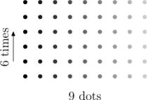
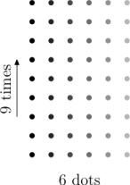

Cuando hice esta pregunta a mi hijo mayor su respuesta fue "Porque la multiplicación es conmutativa, claro". Lo que equivale a decir "Porque es lo que hay, y estaría bien que dejaras de preguntar obviedades". Hace ya tiempo que sabe que esta propiedad de las multiplicaciones resulta muy cómoda: yo le pregunto "¿Cuánto es mil veces tres?", y en vez de sumar tres, más tres, más tres, más tres mil veces dice "lo mismo que tres veces mil, tres mil".
Una forma de ver por qué son posibles estos trucos es dibujar un gráfico que represente la multiplicación. Seis veces nueve es tomar un grupo de nueve cosas y replicarlas seis veces, así:

Y nueve veces seis es tomar un grupo de seis y repetirlas nueve veces, así:

Si sólo nos importa cuántos elementos hay, lo único que hemos hecho ha sido rotar el rectángulo: y los rectángulos no cambian de tamaño cuando los rotamos.
Otra buena ocasión para usar la propiedad conmutativa como atajo es cuando alguien te pregunta, como alguna vez les pasa a mis hijos, "¿Cuántos grupos de 24 minutos hay en un día?". El número total de minutos en un día es: 24 horas en un día, por 60 minutos en una hora. Pero, sea cual sea este número (1440), es 24 veces 60, que es lo mismo que 60 veces 24: o sea que 24 periodos de 60 minutos duran lo mismo que 60 periodos de 24 minutos. Y si un día tiene 60 grupos de 24 minutos también tiene 12 grupos de 120 minutos, lo que no tiene nada que ver con la pregunta original pero es la mar de bonito.